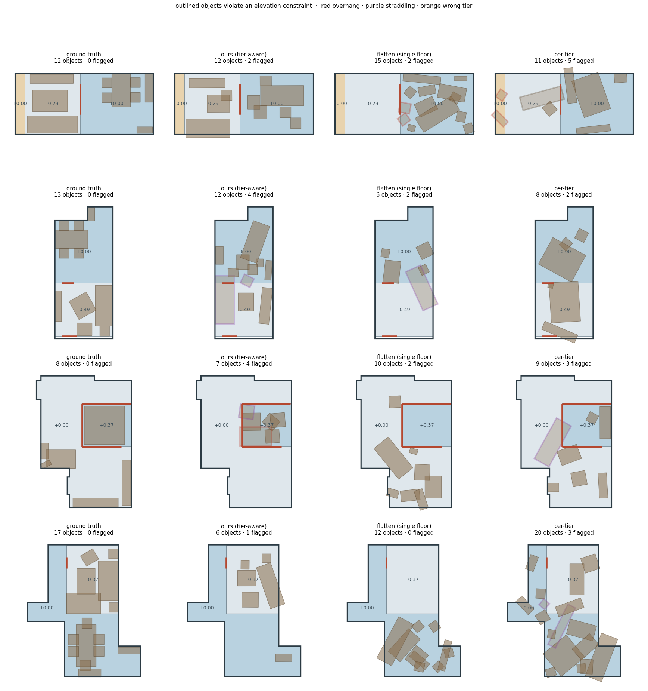

Elevate3D
室內場景生成一直假設樓板是一個平面。下沉客廳、榻榻米高台、錯層與室內夾層不是。
3D-FRONT 一間都沒有
37,529 個房間，樓板高度變化為 0，最大落差 0.0000 m。真實 Matterport 掃描則有 75% 的建築存在樓層內高程變化。
違規率降到基準的三分之一
分區條件化把懸挑、跨層、錯層違規降到平面基準的 1/3–1/6，物件數與高程層使用程度都與 ground truth 吻合。
真實高程場上追平
把區域改成建築導向後，真實場上的違規率下降 56–78%，跨層甚至勝過平面基準。M1 也做出來了 —— 系統現在自己生成高程場。
問題形式化：高程場
現有工作把房間存成一個 2D 多邊形，物件狀態是 (x, y, θ)，z 恆為 0。這個假設在 3D-FRONT 上是字面意義的真：把全部 6,813 棟房子的 Floor mesh 三角面按高度累計面積，37,529 個房間的高度分佈全部是單一值，最大落差 0.0000 m，每個百分位都是 0。
本工作把房間樓板改成分段常數高程場：
# 房間結構 = 外輪廓 + 分區高程 + 過渡元素 S = ( P , { (Rk, hk) }k=1..K , T ) P ⊂ ℝ² 房間外輪廓多邊形 Rk ⊂ P 第 k 個高程分區；互不重疊，∪Rk = P（允許有洞） hk ∈ ℝ 該分區樓板高度，相對房間基準 ±0.000 T 過渡元素 { (edge, kind, rise, run, n_tread) } kind ∈ { step, stair, ramp, ledge } K = 1 ⟹ 退化成現有所有方法的設定。本工作是嚴格泛化，不是新任務。
分區允許有洞這件事比看起來重要：房間正中央的下沉客廳會讓基準層變成一個環，如果分區只能是簡單多邊形，基準層就必須與它所環繞的區域重疊。這個 bug 我踩過一次。
可通行性由每一階的高度決定，不是總落差 —— 0.45 m 分三階的樓梯，四足機器人上得去；0.45 m 的單一落差上不去。所以 n_tread 是欄位而不是衍生量。
表示：z 是導出的，不是預測的
PhyScene 與 SPREAD 讓網路自由輸出絕對 z，再用可微 guidance 把浮空與穿透「修回去」。這代表浮空仍然存在於輸出空間裡，只是被懲罰。
這裡物件存的是它站在什麼上面與離那個面多高：
oi = ( ci , π(i) , xi , yi , Δzi , di , θi ) π(i) 支撐父節點 ∈ { 分區 Rk } ∪ { 其他物件 oj } ∪ { wall, ceiling } zi = top(π(i)) + Δzi ← 沿支撐樹前向計算，不是網路輸出
接觸誤差在表示上恆等於零。原提案裡的 L_contact = Σ |z_i − (z_parent + h_parent)| 不需要存在 —— 測試 test_contact_is_exact_so_the_contact_loss_is_zero 直接驗證它是 0.0。省掉一個超參數，也讓消融實驗變成在比表示而不是比損失權重。
把真實 3D-FRONT 場景轉進這個表示再解回來（K=1），可以量到一件有趣的事：
| 3D-FRONT 物件狀態 | 佔比 |
|---|---|
| 與支撐面精確接觸 | 66.4% |
| 差距在 2 cm 以內 | 18.9% |
| 確實沉在支撐面之下（z < −0.02） | 0.25% |
大家當 ground truth 在訓練的資料，三分之一的物件並沒有真的接觸支撐面。支撐樹參數化讓這些全部變成精確接觸。
FRONT-Elev：把真實佈局抬到真實高程程式上
3D-FRONT 有 3,925 個 CustomizedPlatform mesh，但所有 layout parser 都只讀 type == "Floor"，所以沒人看過它們。即使讀了也沒用：這個型別是雜物袋（落差中位數 0.58 m、90 百分位 2.6 m，多半是降板天花與到頂櫃體），篩成合理地台後全 dataset 只剩幾百個，而且幾乎沒有家具站在上面。
結論是 3D-FRONT 提供的多高程監督為零。但它有 37,529 組專業設計的佈局 —— 真實房型輪廓、真實家具組合、真實資產。FRONT-Elev 保留這一切，只換掉底下的樓板。
核心機制：高程區從家具群長出來，不是蓋上去
真實的下沉客廳大小是由沙發對談群決定的，榻榻米高台是由床決定的。從家具群長出區域，既符合設計實務，也保證分區邊界不會切過任何物件 —— 而「切過物件」正是評測要在生成結果裡抓的失敗（跨層），絕不能出現在 ground truth 裡。
lift_scene(flat_scene, rng): 1 選程式 依房型與面積挑一個 program sunken_lounge / tatami_platform / dining_tier / study_dais 2 取種子 grounded 物件中屬於該 program seed_categories 者 （床這類 anchor 單獨一件即可成立） 再從中抽一個隨機子集 —— 真實地台常常只在床底下， 用整個家具群會讓區域永遠是房間的一大塊 3 初始矩形 種子群足跡的軸對齊外接矩形（軸 = 房間最小外接矩形方向） 4 貼牆 離牆 < 0.55 m 的邊推到牆，最多兩邊 （四邊全貼會把區域灌到填滿房間） 5 吸附空隙 每軸算「自由座標」（沒有任何 grounded 物件橫跨的位置）。 先從真實分佈抽一個目標佔比，再讓 nearest 與 outward 兩種吸附策略競爭誰更接近它 6 推移殘餘 仍被切到的物件，沿最短方向推到完全在某一側（≤ 0.70 m）， 推不動就放棄這個房間 7 切分基準層 datum = room − region；若被切成數塊，每塊各自成為一個 同高度的分區（真實的循環動線由此產生） 8 放階梯 只在「踏階落地區沒有家具」的連續段上放，段內以 0.15 m 掃描 取最長淨空 run；找不到就放棄 9 取落差 從真實分佈取樣（見 §4），量化成整數階 10 指派支撐 足跡 ≥50% 在 region 內 → region 層，否則歸最大重疊的基準塊； 物件對物件的支撐關係原樣保留 11 GT 檢查 用評測本身的程式碼跑一次，有任何違規就丟掉這個房間
一個 benchmark 的 ground truth 如果含有它自己要測的失敗，就比沒有 benchmark 更糟。加上這一步之後產出率從 22.8% 掉到 19.7%，是值得的交換；後續其他改進把產出率拉回 34%。
產出
| 項目 | 數值 |
|---|---|
| 可解析房間（ReRoom 白名單與面積過濾後） | 17,007 |
| 抬升成功的房間 | 8,538（50.2%） |
| 平面 ↔ 多高程配對（每房 1.73 個變體） | 14,782 |
| 程式分佈 | 下沉 7,154 · 榻榻米 6,231 · 餐廳台 902 · 書房台 495 |
| 分區數 K | K=2: 13,604 · K=3: 1,157 · K=4: 21 |
高程場通過 validate() | 14,782 / 14,782 |
| GT 違規率（懸挑／跨層／擋階） | 全部 0.000 |
| GT 違規率（嵌入／錯層／淨空） | 0.0013 · 0.00001 · 0.0008 |

用真實資料校準生成器
第一版語料庫的落差區間是我手挑的。拿真實住宅一比就發現偏窄也偏低，所以改成從實測分佈取樣。
真實落差來自 HouseLayout3D（NeurIPS 2025）對 16 棟真實 Matterport3D 建築的結構標註。實體類別沒有標籤（每個實體的顏色是隨機的），所以用幾何分類：水平板塊、且上方一個房高處有足跡重疊的板塊者為樓板。同一樓層內兩塊在平面上相鄰但高度不同的樓板，即為一處高程變化。
把這 202 筆存成 elevate3d/data/rise_prior.json，取樣時做 2 cm 平滑並依 program 夾限。校準前後：
| 百分位 | 真實 | 校準前 | 校準後 |
|---|---|---|---|
| 10% | 0.198 | 0.180 | 0.180 |
| 50% | 0.384 | 0.326 | 0.370 |
| 90% | 0.526 | 0.423 | 0.498 |
| Wasserstein 距離 | — | 0.0708 m | 0.0320 m |
這一步把「高程幅度」從我發明的參數變成量測值，直接削弱「你在學自己寫的規則」這個質疑的一部分。第一輪結果顯示它是唯一遷移得好的統計量，其他三個沒校準的都對不上 —— 所以第二輪把能量測的也一起量了。
第二輪：區域大小與通道寬度
同一批真實高程對還能量出兩件事。第三件不能量，這點必須講明白。
| 量測 | 10% | 50% | 90% |
|---|---|---|---|
| 高程區佔兩層聯集的比例 | 0.056 | 0.271 | 0.559 |
| 兩層共享邊界長度 | 1.45 m | 5.12 m | 14.16 m |
| 高程區觸及外牆 | 73% 的配對 | ||
第一輪的落差表列出「每房過渡數：真實 1.0」。那不是觀測值 —— MP3D-Elev 的建構器只取最長的一段共享邊，所以每間房恰好一個過渡是我自己的建構選擇。拿它當校準目標等於擬合自己的建構器。共享邊界的分佈能支持的是一條規則而非一個數字：一道寬的通道優於數道窄的。
MP3D-Elev：真實高程場作為分布外測試
FRONT-Elev 的高程場是程序化的，所以在它上面訓練又在它上面評測，等於部分在學生成器。MP3D-Elev 不是：分區多邊形、高度、樓梯全部來自真實建築的標註，frontelev.py 完全沒有參與。
它沒有家具標註，而這不成問題 —— 高程指標（懸挑、跨層、擋階、淨空、能力條件化可達率）是生成佈局的內在性質，不需要參考佈局來比對。這裡產出的是一組真實的、待佈置的房間，正是分布外測試需要的東西。
建構條件
- 兩塊同樓層樓板，平面距離 ≤ 0.30 m，高度差 0.10–0.90 m
- 房間 = 兩塊足跡的聯集，面積 8–70 m²；上層取
差集以保證兩層不重疊 - 共享邊界長度 ≥ 0.60 m（走得過去）
- 天花高度取自該樓板上方被標註的天花板
- 若該邊界附近有標註的真實樓梯且落差吻合，直接採用其踏階數；否則推斷為單階
- 必須通過
ElevationField.validate()
| 項目 | 數值 |
|---|---|
| 房間數 | 72 |
| 來源建築 | 9 |
| 過渡型別 | 真實樓梯 65 · 單階 7 |
| 落差 10／50／90 百分位 | 0.23 · 0.387 · 0.515 m |
| 面積 10／50／90 百分位 | 17.2 · 34.2 · 55.5 m² |
順帶一提：原本計畫預算是下載 15 GB 的 Matterport3D RGB-D 並簽 EULA。HouseLayout3D 是 MIT 授權、無 gate、40 MB，而且提供的是向量化標註而非原始網格 —— 對這個用途更好用。
評測指標
只有樓板不平時才存在的失敗
碰撞率與浮空率 —— PhyScene 提出、大家都在報的那兩個 —— 在這裡是結構性失明的：它們定義在所有物件共用一個平面的場景上，看不見一張沙發有一半懸在下沉客廳的邊緣。
最初 F1 是單邊的：只有下方更低時才算懸挑。這讓「把所有東西都放在最低層」的方法 —— 也就是平面方法的行為 —— 結構性免疫，因為它腳下沒有更低的東西可以懸空。它只能以「把家具開進旁邊的平台」的方式失敗，而少了 F1b，那個失敗不被計分，反方向的同一個錯誤卻被罰。
高程層使用率 —— 拆穿「以拒絕使用換取安全」
上面每一項違規都是在講「物件放錯地方」。一個方法只要從不把任何東西放上非基準層，就可以在每一項上都拿到好分數 —— 空的分區沒有物件可以放錯。所以必須同時量測非基準層樓板被家具覆蓋的比例與物件數。
§8 會顯示這不是假想威脅：平面基準在兩個測試集上都放了恰好 0 個物件在非基準層。
能力條件化可達率（CCN）
依 CapNav（CVPR 2026）的 agent 設定。以 6 cm 網格光柵化，自由空間依 agent 半徑腐蝕，從門口洪泛填充；跨分區只能經由該 agent 能通過的過渡元素，判準是每一階的高度而非總落差。
| Agent | 單階上限 | 半徑 | 所需淨空 |
|---|---|---|---|
| 掃地機器人 | 0.02 m | 0.17 | 0.12 |
| 輪椅使用者 | 僅坡道 | 0.35 | 1.30 |
| 輪式服務機器人 | 0.05 m | 0.25 | 1.20 |
| 四足機器人 | 0.20 m | 0.20 | 0.70 |
| 成人 | 0.45 m | 0.23 | 1.90 |
這個指標在平面樓板上幾乎不隨 agent 變化，這正是沒人報它的原因。加上高程之後，同一批房間的能力落差從 0.128 拉到 0.431，3.4 倍 —— 高程才給了它鑑別力。
模型與訓練
兩階段。M1（3.5M）生成高程場，M2（27.8M，ATISS 式自回歸）在上面佈局。M3 沒有做成學習模組 —— 它是取樣器裡的解析拒絕成本，不含參數。
M1：高程場生成器
建築導向的區域規則把一個高程場壓縮成少數幾個數字：程式標籤、房間主軸座標系裡的區間框、落差。沒有序列要展開，也沒有多邊形要畫。框與落差用混合密度頭，理由跟 M2 一樣 —— 平台該靠哪面牆是多峰的，回歸頭會回答「房間中央」。
訓練目標從語料庫反推而非生成時記錄，所以讀者能自己重算；平坦臂提供負例。
M2：分區條件化佈局
輸入 token
[ 邊界 32 點 ] [ 房間標量 ] [ 分區 token × K ] [ 已放置物件 × n ] [ query ] 分區 token 特徵（9 維）： 質心 xy · 外接尺寸 xy · 面積 · 高度 hk 離開此層的最小單階高度 · 進入此層的最小單階高度 · 是否為基準層
M2 的三處改動
- 分區 token。高程場作為 context 進入注意力，包含幾何、高度、以及誰上得來（最小單階高度）。
- 支撐指標頭取代 z 回歸。對
[分區 | 已放置物件 | 天花]做注意力打分並指向其一。z之後由resolve()算出。放錯樓層因此是一個分類錯誤，被直接懲罰，而不是一個它本來就可以自由發明的 z 上的幾公分回歸誤差。 - 分區相對注意力偏置。三個學習到的純量（同層／跨層／父子）加到注意力 logits 上。原提案是對連續 Δz 做偏置，但同一分區內所有物件的 Δz 都是 0，沒有訊號；離散關係才是重點。—— 這一項最後測不出任何效果。
第一版的 xy／size／yaw 用確定性回歸配 smooth-L1，會收斂到條件平均 —— 沙發該放哪的分佈是多峰的（靠這面牆或那面牆），平均值是房間正中央，於是所有沙發疊在一起。改成混合密度頭（xy 用 16 個成分）後才有可用的佈局。
訓練設定
| 項目 | 設定 |
|---|---|
| 資料 | FRONT-Elev 5,213 訓練 / 579 驗證（依原始平面房間 id 切分，同一房間不跨切） |
| 目標 | teacher forcing，每個場景抽一個前綴長度；物件順序隨機排列但父節點必在子節點之前 |
| 損失 | stop + cat + 2·support + 0.2·xy + 0.1·(size+yaw+dz)，後四項為混合 NLL |
| 最佳化 | AdamW 3e-4，cosine，warmup 1000 步，bf16，400 epoch |
| 硬體 | 單張 NVIDIA L40，每組約 12 分鐘 |
取樣與對照組
取樣器、拒絕採樣與指標四組共用，唯一的差別是模型被告知多少關於樓板的事 —— 這樣比較才只隔離這一個變因。每個物件的平面位置從混合分布抽最多 8 次，取「分區外溢 + 與既有物件重疊」代價最小者。
| 對照組 | 知道什麼 |
|---|---|
| ours | 分區 token + 相對偏置 |
| no-bias | 分區 token，無偏置（消融） |
| flatten | 無分區；所有落地物件一律指派給基準層 —— 現有方法的行為 |
| per-tier | 無分區，但每個分區各自當成一個獨立房間跑一次再合併（免費拿到 GT 高程場） |
| gt | 語料庫本身，上界 |
結果
三輪。每一輪針對前一輪量到的東西動手，而第三輪修正了第二輪的一個錯誤歸因。
| 輪次 | 語料庫 | 訓練房間 | 取樣器 |
|---|---|---|---|
| R1 | 未校準，5,792 對 | 5,213 | 8 次重試、無階梯項、stop 固定 0.5 |
| R2 | 已校準，14,782 對 | 13,300 | 12 次重試、加階梯項、stop 固定 0.5 |
| R3 | 已校準，14,782 對 | 13,300 | 同 R2，stop 閾值經校準 |
同分布：held-out FRONT-Elev，300 間
ours-small 是同一個語料庫、同一個取樣器，但訓練房間數退回 R1 的規模 —— 用來把「資料量」與其他因素分開。
| 指標 | GT | ours | ours-small | +bias | flatten | per-tier |
|---|---|---|---|---|---|---|
| 懸挑 F1a | 0.000 | 0.022 | 0.038 | 0.022 | 0.058 | 0.060 |
| 嵌入 F1b | 0.000 | 0.030 | 0.046 | 0.032 | 0.063 | 0.069 |
| 跨層 F2 | 0.000 | 0.036 | 0.048 | 0.038 | 0.076 | 0.092 |
| 錯層 F5 | 0.000 | 0.008 | 0.011 | 0.009 | 0.050 | 0.044 |
| 擋階 F3（場景） | 0.000 | 0.187 | 0.277 | 0.160 | 0.310 | 0.867 |
| 任一違規（場景） | 0.003 | 0.450 | 0.643 | 0.443 | 0.693 | 0.943 |
| 高程層使用（面積） | 0.457 | 0.389 | 0.385 | 0.387 | 0.087 | 0.414 |
| 高程層使用（物件／場景） | 3.56 | 3.32 | 3.23 | 3.18 | 0.00 | 4.58 |
| CCN 掃地機器人 | 0.676 | 0.598 | 0.551 | 0.580 | 0.324 | 0.492 |
| CCN 輪椅 | 0.699 | 0.602 | 0.532 | 0.576 | 0.277 | 0.534 |
| 物件數／場景 | 9.87 | 9.16 | 9.04 | 8.50 | 9.65 | 13.66 |
分布外：MP3D-Elev，72 間真實房
| 指標 | ours | ours-small | +bias | flatten | per-tier |
|---|---|---|---|---|---|
| 懸挑 F1a | 0.091 | 0.102 | 0.088 | 0.016 | 0.055 |
| 嵌入 F1b | 0.008 | 0.024 | 0.036 | 0.029 | 0.006 |
| 跨層 F2 | 0.050 | 0.055 | 0.074 | 0.022 | 0.045 |
| 錯層 F5 | 0.040 | 0.060 | 0.051 | 0.016 | 0.026 |
| 擋階 F3（場景） | 0.167 | 0.181 | 0.236 | 0.083 | 0.611 |
| 任一違規（場景） | 0.681 | 0.708 | 0.611 | 0.306 | 0.750 |
| 高程層使用（面積） | 0.237 | 0.264 | 0.246 | 0.034 | 0.344 |
| 高程層使用（物件／場景） | 2.58 | 2.63 | 2.49 | 0.00 | 3.96 |
| CCN 掃地機器人 | 0.641 | 0.608 | 0.692 | 0.552 | 0.693 |
停止閾值校準 —— 修掉第二輪引入的過度放置
第二輪每場景放 11.92 個物件，GT 是 9.87；高程層 4.27 對 3.56。更大的語料庫讓模型更願意繼續放，而固定 0.5 的閾值沒有理由剛好落在對的數字上。閾值是一個純量、目標明確，所以改成在 held-out 上針對 GT 物件數掃描 —— 每個方法各掃一次，沒有人被偏袒。MP3D-Elev 沿用同分布掃出來的閾值，因為在測試集上校準就是作弊。
| R2 | R3 | GT | |
|---|---|---|---|
| 物件數／場景 | 11.92 | 9.16 | 9.87 |
| 高程層物件／場景 | 4.27 | 3.32 | 3.56 |
| 任一違規（場景） | 0.580 | 0.450 | 0.003 |
掃出來的閾值很低 —— ours 落在 0.05，也就是掃描範圍的底部。這說明 stop 頭本身校準不良，只有很激進的閾值才能達到正確的物件數。把 stop 頭訓練得校準，會比掃一個閾值更好。
階梯淨空：仍是最大的單一勝利
| 擋階率 | R1 | R3 |
|---|---|---|
| 同分布 | 0.653 | 0.187 |
| 分布外 | 0.542 | 0.167 |
效果毫無歧義，因為取樣器四種方法共用，四種方法都改善了。
第二輪宣稱 OOD 的改善來自「校準生成器的幾何」。ours-small（同語料庫、同取樣器，訓練規模退回 R1）顯示大部分不是。
固定語料庫與取樣器，單看規模（ours-small → ours）：懸挑同分布 0.038→0.022（−43%），OOD 只有 0.102→0.091（−10%）；任一違規同分布 0.643→0.450（−30%），OOD 只有 −4%。而在 R1 的訓練規模下，校準語料庫的 OOD 懸挑是 0.102，R1 是 0.096 —— 並沒有比較好。
所以幾何校準沒有買到第二輪歸功於它的 OOD 改善；那主要來自取樣器的階梯項與更多資料。校準仍然值得做 —— 它拿掉了三個我發明的參數、讓語料庫的邊際分布站得住腳 —— 但它該被報告成方法上的整理，不是指標增益的原因。
注意力偏置：null 第三次成立
ours 與 +bias 在三輪、兩個語料庫、兩個測試集上都在噪聲範圍內。預設關閉，應該從論文拿掉。


第五輪：建築導向的區域 —— 照第四輪的否定去做
第四輪確立了「區域佔比動不了是因為它從家具導出，房間大小不是槓桿」。第五輪換掉導出方式：區域改成從一面牆往內取一個矩形，深度由實測分布抽樣決定，家具去適應它。
| 語料庫統計量 | 家具導向 | 建築導向 | 真實 |
|---|---|---|---|
| 區域佔比中位 | 0.410 | 0.278 | 0.271 |
| Wasserstein | 0.128 | 0.022 | — |
| 抬升成功率 | 49.8% | 52.7% | — |
| GT 五類違規 | 乾淨 | 全 0.00000 | — |
| M1 目標可反推 | 85.0% | 91.2% | — |
三個語料庫版本的 Wasserstein：0.164 → 0.099 → 0.022。
同一輪試過「清空階梯落地帶」並退回：寬度確實從 1.9 拉到 2.8 m（真實 2.9），但產出率腰斬，而且把物件推進鄰近分區 —— GT 違規率從 0.015 爆到 0.44。過渡寬度是唯一還沒對上的語料庫統計量。同一輪也修掉一個實質缺陷：GT 過濾原本只檢查五類違規中的四類，漏掉 embedded。
在 72 個真實 MP3D-Elev 高程場上，ours 從第三輪到第六輪：懸挑 0.077 → 0.017（−78%）、跨層 0.048 → 0.019（−60%）、錯層 0.057 → 0.017（−70%）、任一違規 0.569 → 0.250（−56%）。第三輪是 0.681 對 flatten 的 0.306，現在是 0.250 對 0.208 —— 而且 ours 在跨層上贏過 flatten（0.019 對 0.023），同時每場景放 1.28 個物件在高程層，flatten 是 0.00。
第六輪：M1，以及第一個端到端結果
在此之前所有數字都條件於「給定的高程場」。M1（elevate3d/gen/field.py、field_model.py，3.5M 參數）把它生成出來：一個程式標籤、房間主軸座標系裡的一個區間框、一個落差。建築導向的規則正是讓這件事變得可預測的原因 —— 區域現在是矩形，不是任意多邊形。
它的訓練目標是從語料庫反推的，不是生成時記錄的，所以不需要重建語料庫，讀者也能自己從釋出的資料重算；反推的 region IoU 是 1.000（對 91% 是矩形的區域）。每一對的平坦臂提供負例，所以模型會學到多數房間不該有高程。
| 設定 | 高程層 precision | 高程層物件／場景 | elevation F1 |
|---|---|---|---|
| ground truth | 1.000 | 2.31 | 1.000 |
| 給定高程場 · ours | 0.874 | 1.77 | 0.817 |
| 給定高程場 · +bias | 0.863 | 1.94 | 0.852 |
| 給定高程場 · per-tier | 0.879 | 4.54 | 0.935 |
| 給定高程場 · flatten | 0.000 | 0.00 | 0.000 |
| 端到端 · M1 + M2 | 0.719 | 1.17 | 0.594 |
M1 對 60% 的房間提出高程，對 40% 拒絕（留平坦）。端到端相對給定高程場付出約四分之一的 F1 —— 那是「還要決定要不要、要放哪」的代價。
兩個但書。這張表的 F1 是離線重算的：評測在端到端那一列回傳 0，因為 recall 需要一個 ground-truth 參照而該次執行沒有 gt 臂 —— 已修好，而且現在會明講參照缺失，不再默默記成 0。另外 per-tier 仍然到處拿最高 F1 卻擋住 61–73% 的階梯，所以 F1 必須跟擋階率並排讀。
第四輪：一個「拒絕使用」贏不了的指標
三輪的結局都一樣：平面基準靠著從不把物件放上非基準層，拿下最低的違規率，而沒有任何違規指標看得見這件事 —— 它們每一個都在講「物件放錯地方」，而空的分區沒有物件可以放錯。
elevation_f1 把這個洞補起來。precision 是它放上高程層的物件裡有多少放得合法；recall 是它用了多少高程，對照 ground truth。拒絕使用會把 recall 打到 0，分數跟著歸零。
| 指標 | GT | ours | ours-small | +bias | flatten | per-tier |
|---|---|---|---|---|---|---|
| 高程層 precision | 0.999 | 0.905 | 0.857 | 0.895 | 0.000 | 0.839 |
| 高程層物件／場景 | 3.56 | 3.31 | 2.96 | 3.07 | 0.00 | 4.58 |
| elevation F1（同分布） | 0.9996 | 0.917 | 0.845 | 0.879 | 0.000 | 0.912 |
| elevation F1（分布外） | — | 0.672 | 0.615 | 0.665 | 0.000 | 0.934 |
| 擋階（場景） | 0.000 | 0.187 | 0.273 | 0.173 | 0.270 | 0.847 |
兩點要小心讀。flatten 在兩個測試集上都是 0.000 —— 這正是重點：一個靠拒絕使用高程贏下所有違規指標的基準，不該通過一個「你到底有沒有用高程」的指標。而 per-tier 在分布外拿下最高 F1，卻擋住 61% 的階梯：它被免費給了 GT 高程場、每層獨立取樣，所以分區擺放精確而動線不精確。F1 講的是擺放不是動線，必須跟擋階率並排讀，不能取代它。
更大的房間來源：量測完了，前提是錯的
第二、三輪把兩個卡住的統計量歸咎於 3D-FRONT 房間太小，並提出「換更大的房間來源」。兩半都測了，兩半都錯。
- 更大的房間不會改變區域佔比。用 project5 的最佳化器把 3D-FRONT 客廳重定向到 34–49 m² 的邊界再抬升，區域佔比中位是 0.354 —— 與語料庫的 0.35 沒有差別。家具會按比例填滿房間，所以從家具群長出來的區域，在大房間裡佔的比例跟小房間一樣。
- Infinigen 的房間本來也沒有比較大。它的 floorplan solver 產出的房間中位是 22.0 m²（10/90 為 6.2/56.0，n=83、四棟），對照 3D-FRONT 的 22.3 與真實住宅的 34.2。而且每棟要 1.6–10 分鐘，
solve()回傳的還是 solidify 過的 Blender 幾何，2D 多邊形得重跑前半段才拿得到。
所以真正的原因不是房間，是區域根本就從家具導出。真實的高程樓板是由建築決定的 —— 飄窗凹槽、結構錯層、跨度上方的夾層 —— 家具是之後才進來的。改成建築導向的區域規則才是真的解法，而它同時會消掉「下沉區佔 56% 使基準層變成窄環」那個瑕疵。
這個否定花了兩次量測，省掉一次多日的 Infinigen 整合。安裝評估本身仍然成立：Infinigen 1.15.5 在 Python 3.11 下可用（bpy 4.2.0、約 3 GB），而加入分區高度仍需動 state_def、room/solidifier.py、room/solver.py 的退火 move 與物件求解器的 SupportedBy。
flatten 在兩個測試集上仍然放 0.00 個物件在非基準層，只覆蓋 3.4% 的高程樓板（GT 45.7%）。它的低違規率是「完全不使用高程」換來的。每一項違規都在講物件放錯分區，而它從不把物件放上去 —— 分開我們與它的不是準度，是願不願意使用高程。目前的目標函數只懲罰「用錯」，沒有任何一項獎勵「用對」。
缺陷與下一步
誠實的現況
- 絕對品質仍然不足。0.45 的生成場景至少含一個違規，GT 是 0.003。
- 循環性只解了一半。落差幅度、區域大小與貼牆比例都來自真實量測，MP3D-Elev 的高程場完全不是生成器產生的；但高程區該放在哪面牆、以及分層指派規則，仍然是我寫的（M1 學的正是這個規則的分布）。
- 一個語料庫統計量還沒對上。過渡寬度 1.68 m 對真實 2.93 m。區域佔比原本是另一個，第五輪修好了（0.278 對 0.271）—— 在第四輪確立原因是導出規則而非房間尺寸之後。
- 高程使用仍然偏低。ours 每場景 1.77 個物件在高程層，GT 是 2.31。elevation F1 量出了這個缺口，但訓練目標裡沒有東西去關它。
- stop 頭校準不良。掃出來的最佳閾值落在掃描範圍底部。
- 分段常數是刻意的取捨。涵蓋下沉區、高台、錯層、夾層；坡道以
ramp型別近似；連續曲面樓板留給 future work。
更大的房間來源：已被自己的量測否定
§8 記錄了完整過程。結論是：更大的房間不會改變區域佔比（重定向到 34–49 m² 後仍是 0.354），而 Infinigen 的房間本來也沒有比較大（中位 22.0 m² 對 3D-FRONT 的 22.3）。真正的原因是區域從家具導出，不是房間太小。
中間那個便宜選項 —— 把相鄰的 3D-FRONT 房間合併成開放空間 —— 也測過並否決：全 dataset 只能得到約 350 個可用房間，而且多數相鄰配對是「臥室 + 客廳」這種建築上不成立的組合。
為什麼不接 PhyScene
PhyScene 的輸出空間是單一平面上的 (x, y, θ)，吃不了高程場，所以任何適配都是第二個 flatten baseline。它與現有的 flatten 會同時差在架構與分區知識兩件事，證據力比已經跑完的受控消融更弱；它釋出的權重也只涵蓋客廳。值得跑來正面回答審稿人的提問，不是用來加強論證。
下一步，按期望價值排序
- 把 elevation F1 放進目標函數，而不只是放進報告。它量出了「拒絕使用」的缺口，而我們自己也還低於 GT（1.77 對 2.31）。
- 改善 M1 的 program 頭。五分類準確率 0.53；框與落差擬合得好（NLL −6.8 與 −0.5），端到端的損失集中在「要不要有高程、要哪一種」。
- 過渡寬度，最後一個沒對上的語料庫統計量。清空落地帶必須成為擺放的一部分，而不是事後推一把 —— 當作事後推一把會賠上 GT 的乾淨。
- 把 stop 頭訓練得校準，而不是掃一個閾值。
復現
相依於 project5 (ReRoom) 的 3D-FRONT parser、category 表與幾何工具，以 import 而非複製的方式使用；路徑由環境變數 REROOM_ROOT 覆寫。
# 1. 前提量測：3D-FRONT 的樓板到底有多平 python scripts/scan_front_elevation.py python scripts/scan_front_platforms.py # 2. 真實高程統計（需先取得 HouseLayout3D，40 MB，MIT，無 gate） huggingface-cli download houselayout3d/HouseLayout3D --repo-type dataset \ --local-dir data/houselayout3d python scripts/scan_houselayout_elevation.py # 3. 語料庫與真實測試集 python scripts/build_frontelev.py --workers 12 --tries 8 python scripts/build_mp3d_elev.py # 4. 訓練（單卡；三組只差在被告知多少關於樓板的事） python scripts/train_elevate.py --out runs/m2_full --epochs 400 python scripts/train_elevate.py --out runs/m2_no_bias --epochs 400 --no-tier-bias python scripts/train_elevate.py --out runs/m2_no_tiers --epochs 400 --no-tiers # 5. 評測 python scripts/sample_elevate.py --runs runs --out outputs/eval_frontelev.json python scripts/sample_elevate.py --runs runs --mp3d data/mp3d_elev/rooms.jsonl \ --out outputs/eval_mp3d.json # 6. 圖 python scripts/plot_scenes.py python scripts/plot_samples.py --runs runs
pytest tests/ 有 13 項，包含直接驗證「接觸損失恆為零」與「K=1 時對真實 3D-FRONT 無損還原」的兩項。